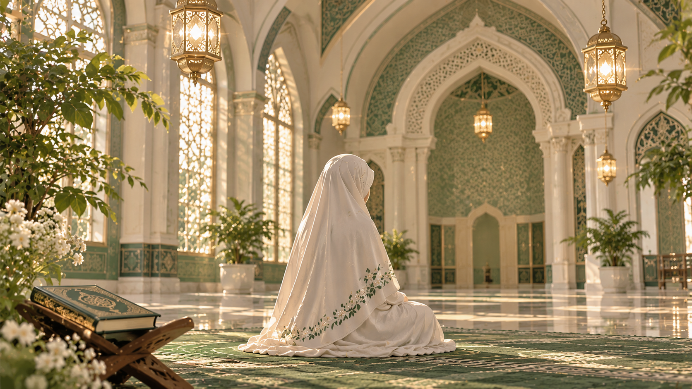

Keutamaan

Keutamaan Sholat 5 Waktu
Shalat adalah sebaik-baik amalan setelah dua kalimat syahadat. Ada hadits muttafaqun ‘alaih sebagai berikut, عَنْ عَبْدِ اللَّهِ بْنِ مَسْعُودٍ قَالَ سَأَلْتُ رَسُولَ اللَّهِ -صلى الله عليه وسلم- أَىُّ الْعَمَلِ أَفْضَلُ قَالَ « الصَّلاَةُ لِوَقْتِهَا ». قَالَ قُلْتُ ثُمَّ أَىٌّ قَالَ « بِرُّ الْوَالِدَيْنِ ». قَالَ قُلْتُ ثُمَّ أَىٌّ قَالَ « الْجِهَادُ فِى سَبِيلِ اللَّهِ ». Dari ‘Abdullah bin Mas’ud, ia berkata, “Aku pernah bertanya pada Rasulullah shallallahu ‘alaihi wa sallam, amalan apakah yang paling afdhol?” Jawab beliau, “Shalat pada waktunya.” Lalu aku bertanya lagi, “Terus apa?” “Berbakti pada orang tua“, jawab Nabi shallallahu ‘alaihi wa sallam. “Lalu apa lagi”, aku bertanya kembali. “Jihad di jalan Allah“, jawab beliau. (HR. Bukhari no. 7534 dan Muslim no. 85)